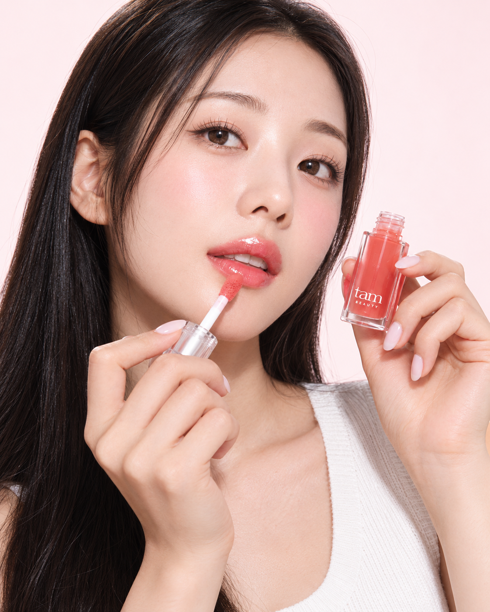
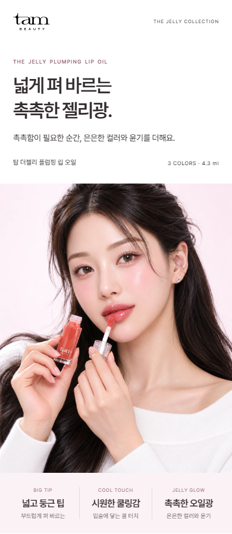
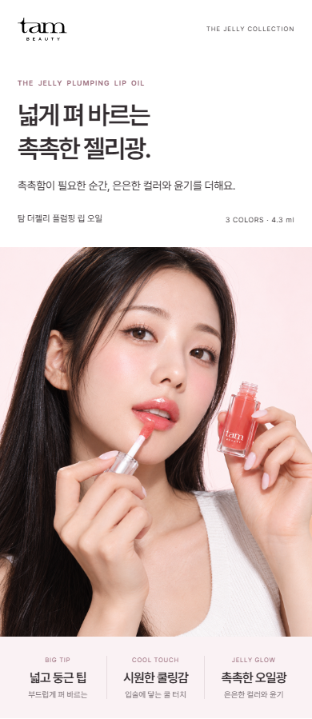

기존 컷 · 얼굴 인상 기준

기존 얼굴의 밝고 부드러운 인상을 기준으로 둡니다.
기존 컷을 비교 기준으로 두고, 실제 뷰티 화보의 조명과 포즈를 참고한 새 후보를 만들었습니다. 앞서 만든 A·B안은 이번 비교에서 제외했습니다.
기존 얼굴의 밝고 부드러운 인상을 기준으로 둡니다.

정돈된 긴 생머리, 조금 열린 입매, 얼굴 옆 제품 배치. 빛과 그림자를 함께 바꾸었습니다.
상세페이지에서 보기 ↗

롬앤 · 올리브영 — 부드러운 피부 톤과 메이크업 표현.
디올 · 공식 화보 — 얼굴의 입체감을 보여주는 조명과 제품을 든 포즈.